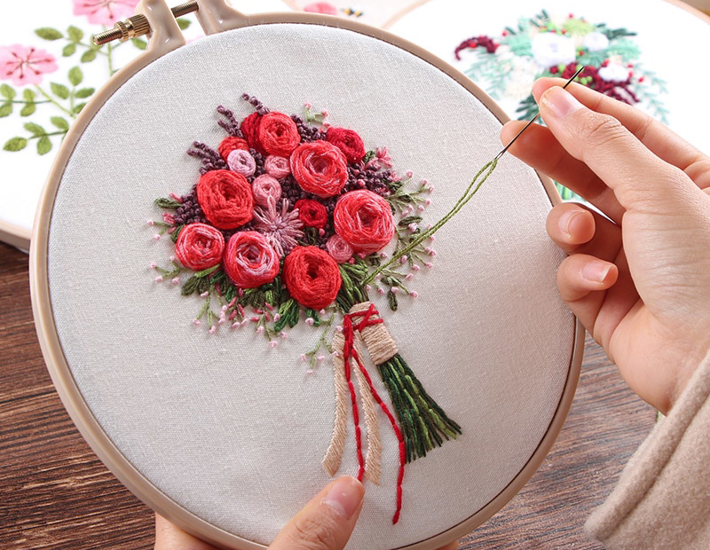

- Вышивание
- — это общеизвестное распространенное рукодельное искусство украшать самыми различными узорами всевозможные ткани и материалы, от самых грубых и плотных, как, например: полотно, холст, кожа, до тончайших материй — батиста, кисеи, газа, тюли и прочего.
- Канва
- — это сетчатая сквозная хлопчатобумажная, реже льняная ткань из кручёной пряжи, отбеленная или подкрашенная, сильно аппретированная. Вырабатывается полотняным или перевивочным переплетением. Применяется как основа или трафарет для вышивания.
- Пяльцы
- — это инструмент для рукоделия в форме рамы или на подставке, на который натянута ткань для вышивания.
- Игла для вышивания
- — иглы для вышивания делятся на два типа: с острым и тупым концом. Для вышивания на плотной ткани используется первый тип игл.
Очень красивая вышивка!
